Chapter 10
Mechanical Properties of Fluids
Mechanical Properties of Fluids

10.1 Introduction
10.2 Pressure
10.3 Streamline flow
10.4 Bernoulli’s principle
10.5 Viscosity
10.6 Reynolds number
10.7 Surface tension
Summary
Points to ponder
Exercises
Additional exercises
Appendix
10.1 Introduction
In this chapter, we shall study some common physical properties of liquids and gases. Liquids and gases can flow and are therefore, called fluids. It is this property that distinguishes liquids and gases from solids in a basic way.
Fluids are everywhere around us. Earth has an envelop of air and two-thirds of its surface is covered with water. Water is not only necessary for our existence; every mammalian body constitute mostly of water. All the processes occurring in living beings including plants are mediated by fluids. Thus understanding the behaviour and properties of fluids is important.
How are fluids different from solids? What is common in liquids and gases? Unlike a solid, a fluid has no definite shape of its own. Solids and liquids have a fixed volume, whereas a gas fills the entire volume of its container. We have learnt in the previous chapter that the volume of solids can be changed by stress. The volume of solid, liquid or gas depends on the stress or pressure acting on it. When we talk about fixed volume of solid or liquid, we mean its volume under atmospheric pressure. The difference between gases and solids or liquids is that for solids or liquids the change in volume due to change of external pressure is rather small. In other words solids and liquids have much lower compressibility as compared to gases.
Shear stress can change the shape of a solid keeping its volume fixed. The key property of fluids is that they offer very little resistance to shear stress; their shape changes by application of very small shear stress. The shearing stress of fluids is about million times smaller than that of solids.
10.2 Pressure
A sharp needle when pressed against our skin pierces it. Our skin, however, remains intact when a blunt object with a wider contact area (say the back of a spoon) is pressed against it with the same force. If an elephant were to step on a man’s chest, his ribs would crack. A circus performer across whose chest a large, light but strong wooden plank is placed first, is saved from this accident. Such everyday experiences convince us that both the force and its coverage area are important. Smaller the area on which the force acts, greater is the impact. This concept is known as pressure.
When an object is submerged in a fluid at rest, the fluid exerts a force on its surface. This force is always normal to the object’s surface. This is so because if there were a component of force parallel to the surface, the object will also exert a force on the fluid parallel to it; as a consequence of Newton’s third law. This force will cause the fluid to flow parallel to the surface. Since the fluid is at rest, this cannot happen. Hence, the force exerted by the fluid at rest has to be perpendicular to the surface in contact with it. This is shown in Fig.10.1(a).
The normal force exerted by the fluid at a point may be measured. An idealised form of one such pressure-measuring device is shown in Fig. 10.1(b). It consists of an evacuated chamber with a spring that is calibrated to measure the force acting on the piston. This device is placed at a point inside the fluid. The inward force exerted by the fluid on the piston is balanced by the outward spring force and is thereby measured.
If F is the magnitude of this normal force on the piston of area A then the average pressure Pav is defined as the normal force acting per unit area.
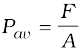 (10.1)
In principle, the piston area can be made arbitrarily small. The pressure is then defined in a limiting sense as
P = 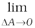 (10.2)
(10.2)
Pressure is a scalar quantity. We remind the reader that it is the component of the force normal to the area under consideration and not the (vector) force that appears in the numerator in Eqs. (10.1) and (10.2). Its dimensions are [ML–1T–2]. The SI unit of pressure is N m–2. It has been named as pascal (Pa) in honour of the French scientist Blaise Pascal (1623-1662) who carried out pioneering studies on fluid pressure. A common unit of pressure is the atmosphere (atm), i.e. the pressure exerted by the atmosphere at sea level (1 atm = 1.013 × 105 Pa).
Another quantity, that is indispensable in describing fluids, is the density ρ. For a fluid of mass m occupying volume V,
 (10.3)
(10.3)
The dimensions of density are [ML–3]. Its SI unit is kg m–3. It is a positive scalar quantity. A liquid is largely incompressible and its density is therefore, nearly constant at all pressures. Gases, on the other hand exhibit a large variation in densities with pressure.
The density of water at 4oC (277 K) is 1.0 × 103 kg m–3. The relative density of a substance is the ratio of its density to the density of water at 4oC. It is a dimensionless positive scalar quantity. For example the relative density of aluminium is 2.7. Its density is 2.7 × 103 kg m–3. The densities of some common fluids are displayed in Table 10.1.
Table 10.1 Densities of some common fluids at STP*
* STP means standard temperature (00C) and 1 atm pressure.
Example 10.1 The two thigh bones (femurs), each of cross-sectional area10 cm2 support the upper part of a human body of mass 40 kg. Estimate the average pressure sustained by the femurs.
Answer Total cross-sectional area of the femurs is A = 2 × 10 cm2 = 20 × 10–4 m2. The force acting on them is F = 40 kg wt = 400 N (taking g = 10 m s–2). This force is acting vertically down and hence, normally on the femurs. Thus, the average pressure is
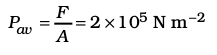
10.2.1 Pascal’s Law
The French scientist Blaise Pascal observed that the pressure in a fluid at rest is the same at all points if they are at the same height. This fact may be demonstrated in a simple way.
Fig. 10.2 shows an element in the interior of a fluid at rest. This element ABC-DEF is in the form of a right-angled prism. In principle, this prismatic element is very small so that every part of it can be considered at the same depth from the liquid surface and therefore, the effect of the gravity is the same at all these points. But for clarity we have enlarged this element. The forces on this element are those exerted by the rest of the fluid and they must be normal to the surfaces of the element as discussed above. Thus, the fluid exerts pressures Pa, Pb and Pc on this element of area corresponding to the normal forces Fa, Fb and Fc as shown in Fig. 10.2 on the faces BEFC, ADFC and ADEB denoted by Aa, Ab and Ac respectively. Then
Fb sinθ = Fc, Fb cosθ = Fa (by equilibrium)
Ab sinθ = Ac, Ab cosθ = Aa (by geometry)
Thus,
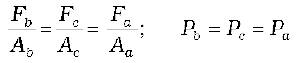 (10.4)
Hence, pressure exerted is same in all directions in a fluid at rest. It again reminds us that like other types of stress, pressure is not a vector quantity. No direction can be assigned to it. The force against any area within (or bounding) a fluid at rest and under pressure is normal to the area, regardless of the orientation of the area.
Now consider a fluid element in the form of a horizontal bar of uniform cross-section. The bar is in equilibrium. The horizontal forces exerted at its two ends must be balanced or the pressure at the two ends should be equal. This proves that for a liquid in equilibrium the pressure is same at all points in a horizontal plane. Suppose the pressure were not equal in different parts of the fluid, then there would be a flow as the fluid will have some net force acting on it. Hence in the absence of flow the pressure in the fluid must be same everywhere. Wind is flow of air due to pressure differences.
10.2.2 Variation of Pressure with Depth
Consider a fluid at rest in a container. In Fig. 10.3 point 1 is at height h above a point 2. The pressures at points 1 and 2 are P1 and P2 respectively. Consider a cylindrical element of fluid having area of base A and height h. As the fluid is at rest the resultant horizontal forces should be zero and the resultant vertical forces should balance the weight of the element. The forces acting in the vertical direction are due to the fluid pressure at the top (P1A) acting downward, at the bottom (P2A) acting upward. If mg is weight of the fluid in the cylinder we have
(P2 − P1) A = mg (10.5)
Now, if ρ is the mass density of the fluid, we have the mass of fluid to be m = ρV= ρhA so that
P2 − P1= ρgh (10.6)
Fig.10.3 Fluid under gravity. The effect of gravity is illustrated through pressure on a vertical cylindrical column.
Pressure difference depends on the vertical distance h between the points (1 and 2), mass density of the fluid ρ and acceleration due to gravity g. If the point 1 under discussion is shifted to the top of the fluid (say water), which is open to the atmosphere, P1 may be replaced by atmospheric pressure (Pa) and we replace P2 by P. Then Eq. (10.6) gives
P = Pa + ρgh (10.7)
Thus, the pressure P, at depth below the surface of a liquid open to the atmosphere is greater than atmospheric pressure by an amount ρgh. The excess of pressure, P − Pa, at depth h is called a gauge pressure at that point.
The area of the cylinder is not appearing in the expression of absolute pressure in Eq. (10.7). Thus, the height of the fluid column is important and not cross sectional or base area or the shape of the container. The liquid pressure is the same at all points at the same horizontal level (same depth). The result is appreciated through the example of hydrostatic paradox. Consider three vessels A, B and C [Fig.10.4] of different shapes. They are connected at the bottom by a horizontal pipe. On filling with water the level in the three vessels is the same though they hold different amounts of water. This is so, because water at the bottom has the same pressure below each section of the vessel.

Fig 10.4 Illustration of hydrostatic paradox. The three vessels A, B and C contain different amounts of liquids, all upto the same height.
Example 10.2 What is the pressure on a swimmer 10 m below the surface of a lake?
Answer Here
h = 10 m and ρ = 1000 kg m-3. Take g = 10 m s–2
From Eq. (10.7)
P = Pa + ρ gh
= 1.01 × 105 Pa + 1000 kg m–3 × 10 m s–2 × 10 m
= 2.01 × 105 Pa
≈ 2 atm
This is a 100% increase in pressure from surface level. At a depth of 1 km the increase in pressure is 100 atm! Submarines are designed to withstand such enormous pressures.
10.2.3 Atmospheric Pressure and Gauge Pressure
The pressure of the atmosphere at any point is equal to the weight of a column of air of unit cross sectional area extending from that point to the top of the atmosphere. At sea level it is 1.013 × 105 Pa (1 atm). Italian scientist Evangelista Torricelli (1608-1647) devised for the first time, a method for measuring atmospheric pressure. A long glass tube closed at one end and filled with mercury is inverted into a trough of mercury as shown in Fig.10.5 (a). This device is known as mercury barometer. The space above the mercury column in the tube contains only mercury vapour whose pressure P is so small that it may be neglected. The pressure inside the column at point A must equal the pressure at point B, which is at the same level. Pressure at B = atmospheric pressure = Pa
Pa = ρgh (10.8)
where ρ is the density of mercury and h is the height of the mercury column in the tube.
In the experiment it is found that the mercury column in the barometer has a height of about 76 cm at sea level equivalent to one atmosphere (1 atm). This can also be obtained using the value of ρ in Eq. (10.8). A common way of stating pressure is in terms of cm or mm of mercury (Hg). A pressure equivalent of 1 mm is called a torr (after Torricelli).
1 torr = 133 Pa.
The mm of Hg and torr are used in medicine and physiology. In meteorology, a common unit is the bar and millibar.
1 bar = 105 Pa
An open-tube manometer is a useful instrument for measuring pressure differences. It consists of a U-tube containing a suitable liquid i.e. a low density liquid (such as oil) for measuring small pressure differences and a high density liquid (such as mercury) for large pressure differences. One end of the tube is open to the atmosphere and other end is connected to the system whose pressure we want to measure [see Fig. 10.5 (b)]. The pressure P at A is equal to pressure at point B. What we normally measure is the gauge pressure, which is P − Pa, given by Eq. (10.8) and is proportional to manometer height h.

Fig 10.5 Two pressure measuring devices.
Pressure is same at the same level on both sides of the U-tube containing a fluid. For liquids the density varies very little over wide ranges in pressure and temperature and we can treat it safely as a constant for our present purposes. Gases on the other hand, exhibits large variations of densities with changes in pressure and temperature. Unlike gases, liquids are therefore, largely treated as incompressible.
Example 10.3 The density of the atmosphere at sea level is 1.29 kg/m3. Assume that it does not change with altitude. Then how high would the atmosphere extend?
Answer We use Eq. (10.7)
ρgh = 1.29 kg m–3 × 9.8 m s2 × h m = 1.01 × 105 Pa
∴ h = 7989 m ≈ 8 km
In reality the density of air decreases with height. So does the value of g. The atmospheric cover extends with decreasing pressure over 100 km. We should also note that the sea level atmospheric pressure is not always 760 mm of Hg. A drop in the Hg level by 10 mm or more is a sign of an approaching storm.
Example 10.4 At a depth of 1000 m in an ocean (a) what is the absolute pressure? (b) What is the gauge pressure? (c) Find the force acting on the window of area 20 cm × 20 cm of a submarine at this depth, the interior of which is maintained at sea-level atmospheric pressure. (The density of sea water is 1.03 × 103 kg m-3, g = 10m s–2.)
Answer Here h = 1000 m and ρ = 1.03 × 103 kg m-3.
(a) From Eq. (10.6), absolute pressure
P = Pa + ρgh
= 1.01 × 105 Pa
+ 1.03 × 103 kg m–3 × 10 m s–2 × 1000 m
= 104.01 × 105 Pa
≈ 104 atm
(b) Gauge pressure is P − Pa = ρgh = Pg
Pg = 1.03 × 103 kg m–3 × 10 ms2 × 1000 m
= 103 × 105 Pa
≈ 103 atm
(c) The pressure outside the submarine is
P = Pa + ρgh and the pressure inside it is Pa. Hence, the net pressure acting on the window is gauge pressure, Pg = ρgh. Since the area of the window is A = 0.04 m2, the force acting on it is
F = Pg A = 103 × 105 Pa × 0.04 m2 = 4.12 × 105 N
10.2.4 Hydraulic Machines
Let us now consider what happens when we change the pressure on a fluid contained in a vessel. Consider a horizontal cylinder with a piston and three vertical tubes at different points. The pressure in the horizontal cylinder is indicated by the height of liquid column in the vertical tubes.It is necessarily the same in all. If we push the piston, the fluid level rises in all the tubes, again reaching the same level in each one of them.
This indicates that when the pressure on the cylinder was increased, it was distributed uniformly throughout. We can say whenever external pressure is applied on any part of a fluid contained in a vessel, it is transmitted undiminished and equally in all directions. This is the Pascal’s law for transmission of fluid pressure and has many applications in daily life.
Archemedes’ Principle
Fluid appears to provide partial support to the objects placed in it. When a body is wholly or partially immersed in a fluid at rest, the fluid exerts pressure on the surface of the body in contact with the fluid. The pressure is greater on lower surfaces of the body than on the upper surfaces as pressure in a fluid increases with depth. The resultant of all the forces is an upward force called buoyant force. Suppose that a cylindrical body is immersed in the fluid. The upward force on the bottom of the body is more than the downward force on its top. The fluid exerts a resultant upward force or buoyant force on the body equal to (P2-P1) A. We have seen in equation 10.4 that (P2-P1)A = ρghA. Now hA is the volume of the solid and ρhA is the weight of an equivaliant volume of the fluid. (P2-P1)A = mg. Thus the upward force exerted is equal to the weight of the displaced fluid.
The result holds true irrespective of the shape of the object and here cylindrical object is considered only for convenience. This is Archimedes’ principle. For totally immersed objects the volume of the fluid displaced by the object is equal to its own volume. If the density of the immersed object is more than that of the fluid, the object will sink as the weight of the body is more than the upward thrust. If the density of the object is less than that of the fluid, it floats in the fluid partially submerged. To calculate the volume submerged. Suppose the total volume of the object is Vs and a part Vp of it is submerged in the fluid. Then the upward force which is the weight of the displaced fluid is ρfgVp, which must equal the weight of the body; ρsgVs = ρfgVpor ρs/ρf = Vp/Vs The apparent weight of the floating body is zero.
This principle can be summarised as; ‘the loss of weight of a body submerged (partially or fully) in a fluid is equal to the weight of the fluid displaced’.
A number of devices such as hydraulic lift and hydraulic brakes are based on the Pascal’s law. In these devices fluids are used for transmitting pressure. In a hydraulic lift as shown in Fig. 10.6 two pistons are separated by the space filled with a liquid. A piston of small cross section A1 is used to exert a force F1 directly on the liquid. The pressure P =  is transmitted throughout the liquid to the larger cylinder attached with a larger piston of area A2, which results in an upward force of P × A2. Therefore, the piston is capable of supporting a large force (large weight of, say a car, or a truck, placed on the platform) F2 = PA2 = 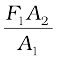. By changing the force at A1, the platform can be moved up or down. Thus, the applied force has been increased by a factor of
is transmitted throughout the liquid to the larger cylinder attached with a larger piston of area A2, which results in an upward force of P × A2. Therefore, the piston is capable of supporting a large force (large weight of, say a car, or a truck, placed on the platform) F2 = PA2 = 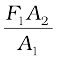. By changing the force at A1, the platform can be moved up or down. Thus, the applied force has been increased by a factor of  and this factor is the mechanical advantage of the device. The example below clarifies it.
and this factor is the mechanical advantage of the device. The example below clarifies it.

Fig 10.6 Schematic diagram illustrating the principle behind the hydraulic lift, a device used to lift heavy loads.
Example 10.5 Two syringes of different cross sections (without needles) filled with water are connected with a tightly fitted rubber tube filled with water. Diameters of the smaller piston and larger piston are 1.0 cm and 3.0 cm respectively. (a) Find the force exerted on the larger piston when a force of 10 N is applied to the smaller piston. (b) If the smaller piston is pushed in through 6.0 cm, how much does the larger piston move out?
Answer (a) Since pressure is transmitted undiminished throughout the fluid,
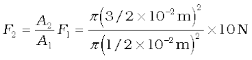
= 90 N
(b) Water is considered to be perfectly incompressible. Volume covered by the movement of smaller piston inwards is equal to volume moved outwards due to the larger piston.
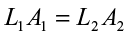

0.67 × 10-2 m = 0.67 cm
Note, atmospheric pressure is common to both pistons and has been ignored.
Example 10.6 In a car lift compressed air exerts a force F1 on a small piston having a radius of 5.0 cm. This pressure is transmitted to a second piston of radius 15 cm (Fig 10.7). If the mass of the car to be lifted is 1350 kg, calculate F1. What is the pressure necessary to accomplish this task? (g = 9.8 ms-2).
Answer Since pressure is transmitted undiminished throughout the fluid,
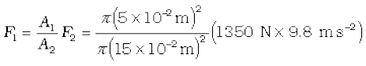
= 1470 N
≈ 1.5 × 103 N
The air pressure that will produce this force is
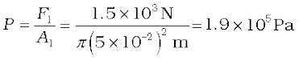
This is almost double the atmospheric pressure.
Archimedes (287 – 212 B.C.)
Archimedes was a Greek philosopher, mathematician, scientist and engineer. He invented the catapult and devised a system of pulleys and levers to handle heavy loads. The king of his native city Syracuse, Hiero II asked him to determine if his gold crown was alloyed with some cheaper metal such as silver without damaging the crown. The partial loss of weight he experienced while lying in his bathtub suggested a solution to him. According to legend, he ran naked through the streets of Syracuse exclaiming “Eureka, eureka!”, which means “I have found it, I have found it!”
Hydraulic brakes in automobiles also work on the same principle. When we apply a little force on the pedal with our foot the master piston moves inside the master cylinder, and the pressure caused is transmitted through the brake oil to act on a piston of larger area. A large force acts on the piston and is pushed down expanding the brake shoes against brake lining. In this way a small force on the pedal produces a large retarding force on the wheel. An important advantage of the system is that the pressure set up by pressing pedal is transmitted equally to all cylinders attached to the four wheels so that the braking effort is equal on all wheels.
10.3 STREAMLINE FLOW
So far we have studied fluids at rest. The study of the fluids in motion is known as fluid dynamics. When a water-tap is turned on slowly, the water flow is smooth initially, but loses its smoothness when the speed of the outflow is increased. In studying the motion of fluids we focus our attention on what is happening to various fluid particles at a particular point in space at a particular time. The flow of the fluid is said to be steady if at any given point, the velocity of each passing fluid particle remains constant in time. This does not mean that the velocity at different points in space is same. The velocity of a particular particle may change as it moves from one point to another. That is, at some other point the particle may have a different velocity, but every other particle which passes the second point behaves exactly as the previous particle that has just passed that point. Each particle follows a smooth path, and the paths of the particles do not cross each other.
Fig. 10.7 The meaning of streamlines. (a) A typical trajectory of a fluid particle. (b) A region of streamline flow.
The path taken by a fluid particle under a steady flow is a streamline. It is defined as a curve whose tangent at any point is in the direction of the fluid velocity at that point. Consider the path of a particle as shown in Fig.10.7 (a), the curve describes how a fluid particle moves with time. The curve PQ is like a permanent map of fluid flow, indicating how the fluid streams. No two streamlines can cross, for if they do, an oncoming fluid particle can go either one way or the other and the flow would not be steady. Hence, in steady flow, the map of flow is stationary in time. How do we draw closely spaced streamlines ? If we intend to show streamline of every flowing particle, we would end up with a continuum of lines. Consider planes perpendicular to the direction of fluid flow e.g., at three points P, R and Q in Fig.10.7 (b). The plane pieces are so chosen that their boundaries be determined by the same set of streamlines. This means that number of fluid particles crossing the surfaces as indicated at P, R and Q is the same. If area of cross-sections at these points are AP,AR and AQ and speeds of fluid particles are vP, vR and vQ, then mass of fluid ΔmP crossing at AP in a small interval of time Δt is ρPAPvP Δt. Similarly mass of fluid ΔmR flowing or crossing at AR in a small interval of time Δt is ρRARvR Δt and mass of fluid ΔmQ is ρQAQvQ Δt crossing at AQ. The mass of liquid flowing out equals the mass flowing in, holds in all cases. Therefore,
ρPAPvPΔt = ρRARvRΔt = ρQAQvQΔt (10.9)
For flow of incompressible fluids
ρP = ρR = ρQ
Equation (10.9) reduces to
APvP = ARvR = AQvQ (10.10)
which is called the equation of continuity and it is a statement of conservation of mass in flow of incompressible fluids. In general
Av = constant (10.11)
Av gives the volume flux or flow rate and remains constant throughout the pipe of flow. Thus, at narrower portions where the streamlines are closely spaced, velocity increases and its vice versa. From (Fig 10.7b) it is clear that AR > AQ or vR < vQ, the fluid is accelerated while passing from R to Q. This is associated with a change in pressure in fluid flow in horizontal pipes.
Steady flow is achieved at low flow speeds. Beyond a limiting value, called critical speed, this flow loses steadiness and becomes turbulent. One sees this when a fast flowing stream encounters rocks, small foamy whirlpool-like regions called ‘white water rapids are formed.
Figure 10.8 displays streamlines for some typical flows. For example, Fig. 10.8(a) describes a laminar flow where the velocities at different points in the fluid may have different magnitudes but their directions are parallel.
Figure 10.8 (b) gives a sketch of turbulent flow.
Fig. 10.8 (a) Some streamlines for fluid flow. (b) A jet of air striking a flat plate placed perpendicular to it. This is an example of turbulent flow.
10.4 BERNOULLI’S PRINCIPLE
Fluid flow is a complex phenomenon. But we can obtain some useful properties for steady or streamline flows using the conservation of energy.
Consider a fluid moving in a pipe of varying cross-sectional area. Let the pipe be at varying heights as shown in Fig. 10.9. We now suppose that an incompressible fluid is flowing through the pipe in a steady flow. Its velocity must change as a consequence of equation of continuity. A force is required to produce this acceleration, which is caused by the fluid surrounding it, the pressure must be different in different regions. Bernoulli’s equation is a general expression that relates the pressure difference between two points in a pipe to both velocity changes (kinetic energy change) and elevation (height) changes (potential energy change). The Swiss Physicist Daniel Bernoulli developed this relationship in 1738.
Consider the flow at two regions 1 (i.e. BC) and 2 (i.e. DE). Consider the fluid initially lying between B and D. In an infinitesimal time interval ∆t, this fluid would have moved. Suppose v1 is the speed at B and v2 at D, then fluid initially at B has moved a distance v1∆t to C (v1∆t is small enough to assume constant cross-section along BC). In the same interval ∆t the fluid initially at D moves to E, a distance equal to v2∆t. Pressures P1 and P2 act as shown on the plane faces of areas A1 and A2 binding the two regions. The work done on the fluid at left end (BC) is W1 = P1A1(v1∆t) = P1∆V. Since the same volume ∆V passes through both the regions (from the equation of continuity) the work done by the fluid at the other end (DE) is W2 = P2A2(v2∆t) = P2∆V or, the work done on the fluid is –P2∆V. So the total work done on the fluid is
W1 – W2 = (P1− P2) ∆V
Part of this work goes into changing the kinetic energy of the fluid, and part goes into changing the gravitational potential energy. If the density of the fluid is ρ and ∆m = ρA1v1∆t = ρ ∆V is the mass passing through the pipe in time ∆t, then change in gravitational potential energy is
∆U = ρg∆V (h2 − h1)
The change in its kinetic energy is
∆K =  ρ ∆V (v22 − v12)
ρ ∆V (v22 − v12)
We can employ the work – energy theorem (Chapter 6) to this volume of the fluid and this yields
(P1− P2) ∆V =  ρ ∆V (v22 − v12) + ρg∆V (h2 − h1)
ρ ∆V (v22 − v12) + ρg∆V (h2 − h1)
We now divide each term by ∆V to obtain
(P1− P2) =  ρ (v22 − v12) + ρg (h2 − h1)
ρ (v22 − v12) + ρg (h2 − h1)
We can rearrange the above terms to obtain
P1 +  ρv12 + ρgh1 = P2+
ρv12 + ρgh1 = P2+  ρv22 + ρgh2 (10.12)
ρv22 + ρgh2 (10.12)
Daniel Bernoulli (1700-1782)
Daniel Bernoulli was a Swiss scientist and mathematician who along with Leonard Euler had the distinction of winning the French Academy prize for mathematics ten times. He also studied medicine and served as a professor of anatomy and botany for a while at Basle, Switzerland. His most well known work was in hydrodynamics, a subject he developed from a single principle: the conservation of energy. His work included calculus, probability, the theory of vibrating strings, and applied mathematics. He has been called the founder of mathematical physics.
This is Bernoulli’s equation. Since 1 and 2 refer to any two locations along the pipeline, we may write the expression in general as
P +  ρv2 + ρgh = constant (10.13)
ρv2 + ρgh = constant (10.13)
Fig. 10.9 The flow of an ideal fluid in a pipe of varying cross section. The fluid in a section of length v1∆t moves to the section of length v2∆t in time ∆t.
In words, the Bernoulli’s relation may be stated as follows: As we move along a streamline the sum of the pressure (P), the kinetic energy per unit volume 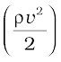 and the potential energy per unit volume (ρgh) remains a constant.
Note that in applying the energy conservation principle, there is an assumption that no energy is lost due to friction. But in fact, when fluids flow, some energy does get lost due to internal friction. This arises due to the fact that in a fluid flow, the different layers of the fluid flow with different velocities. These layers exert frictional forces on each other resulting in a loss of energy. This property of the fluid is called viscosity and is discussed in more detail in a later section. The lost kinetic energy of the fluid gets converted into heat energy. Thus, Bernoulli’s equation ideally applies to fluids with zero viscosity or non-viscous fluids. Another restriction on application of Bernoulli theorem is that the fluids must be incompressible, as the elastic energy of the fluid is also not taken into consideration. In practice, it has a large number of useful applications and can help explain a wide variety of phenomena for low viscosity incompressible fluids. Bernoulli’s equation also does not hold for non-steady or turbulent flows, because in that situation velocity and pressure are constantly fluctuating in time.
When a fluid is at rest i.e. its velocity is zero everywhere, Bernoulli’s equation becomes
P1 + ρgh1 = P2 + ρgh2
(P1− P2) = ρg (h2 − h1)
which is same as Eq. (10.6).
10.4.1 Speed of Efflux: Torricelli’s Law
The word efflux means fluid outflow. Torricelli discovered that the speed of efflux from an open tank is given by a formula identical to that of a freely falling body. Consider a tank containing a liquid of density ρ with a small hole in its side at a height y1 from the bottom (see Fig. 10.10). The air above the liquid, whose surface is at height y2, is at pressure P. From the equation of continuity [Eq. (10.10)] we have
v1 A1 = v2 A2
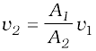
Fig. 10.10 Torricelli’s law. The speed of efflux, v1, from the side of the container is given by the application of Bernoulli’s equation. If the container is open at the top to the atmosphere then 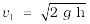.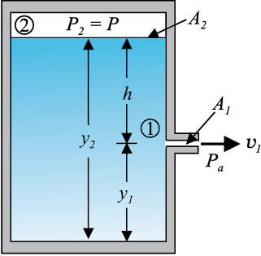
If the cross sectional area of the tank A2 is much larger than that of the hole (A2 >>A1), then we may take the fluid to be approximately at rest at the top, i.e. v2 = 0. Now applying the Bernoulli equation at points 1 and 2 and noting that at the hole P1 = Pa, the atmospheric pressure, we have from Eq. (10.12)
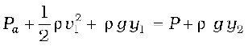
Taking y2 – y1 = h we have
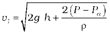 (10.14)
When P >>Pa and 2 g h may be ignored, the speed of efflux is determined by the container pressure. Such a situation occurs in rocket propulsion. On the other hand if the tank is open to the atmosphere, then P = Pa and
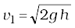 (10.15)
This is the speed of a freely falling body. Equation (10.15) is known as Torricelli’s law.
10.4.2 Venturi-meter
The Venturi-meter is a device to measure the flow speed of incompressible fluid. It consists of a tube with a broad diameter and a small constriction at the middle as shown in Fig. (10.11). A manometer in the form of a U-tube is also attached to it, with one arm at the broad neck point of the tube and the other at constriction as shown in Fig. (10.11). The manometer contains a liquid of density ρm. The speed v1 of the liquid flowing through the tube at the broad neck area A is to be measured from equation of continuity Eq. (10.10) the speed at the constriction becomes 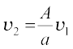. Then using Bernoulli’s equation, we get
P1+  ρv12 = P2+ ρv12 (A/a)2
ρv12 = P2+ ρv12 (A/a)2
So that
P1- P2 = ρv12 [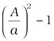] (10.16)
This pressure difference causes the fluid in the U tube connected at the narrow neck to rise in comparison to the other arm. The difference in height h measure the pressure difference.
P1– P2 = ρmgh =  ρv12 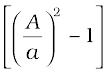
ρv12 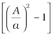
So that the speed of fluid at wide neck is
v1=  (10.17)
(10.17)
The principle behind this meter has many applications. The carburetor of automobile has a Venturi channel (nozzle) through which air flows with a large speed. The pressure is then lowered at the narrow neck and the petrol (gasoline) is sucked up in the chamber to provide the correct mixture of air to fuel necessary for combustion. Filter pumps or aspirators, Bunsen burner, atomisers and sprayers [See Fig. 10.12] used for perfumes or to spray insecticides work on the same principle.
Example 10.7 Blood velocity: The flow of blood in a large artery of an anesthetised dog is diverted through a Venturi meter. The wider part of the meter has a cross-sectional area equal to that of the artery. A = 8 mm2. The narrower part has an area a = 4 mm2. The pressure drop in the artery is 24 Pa. What is the speed of the blood in the artery?
Answer We take the density of blood from Table 10.1 to be 1.06 × 103 kg m-3. The ratio of the areas is 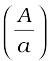 = 2. Using Eq. (10.17) we obtain
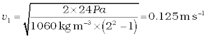
10.4.3 Blood Flow and Heart Attack
Bernoulli’s principle helps in explaining blood flow in artery. The artery may get constricted due to the accumulation of plaque on its inner walls. In order to drive the blood through this constriction a greater demand is placed on the activity of the heart. The speed of the flow of the blood in this region is raised which lowers the pressure inside and the artery may collapse due to the external pressure. The heart exerts further pressure to open this artery and forces the blood through. As the blood rushes through the opening, the internal pressure once again drops due to same reasons leading to a repeat collapse. This may result in heart attack.
10.4.4 Dynamic Lift
Dynamic lift is the force that acts on a body, such as airplane wing, a hydrofoil or a spinning ball, by virtue of its motion through a fluid. In many games such as cricket, tennis, baseball, or golf, we notice that a spinning ball deviates from its parabolic trajectory as it moves through air. This deviation can be partly explained on the basis of Bernoulli’s principle.
(i) Ball moving without spin: Fig. 10.13(a) shows the streamlines around a non-spinning ball moving relative to a fluid. From the symmetry of streamlines it is clear that the velocity of fluid (air) above and below the ball at corresponding points is the same resulting in zero pressure difference. The air therefore, exerts no upward or downward force on the ball.
(ii) Ball moving with spin: A ball which is spinning drags air along with it. If the surface is rough more air will be dragged. Fig 10.13(b) shows the streamlines of air for a ball which is moving and spinning at the same time. The ball is moving forward and relative to it the air is moving backwards. Therefore, the velocity of air above the ball relative to it is larger and below it is smaller. The stream lines thus get crowded above and rarified below.
This difference in the velocities of air results in the pressure difference between the lower and upper faces and there is a net upward force on the ball. This dynamic lift due to spining is called Magnus effect.
(c)
Fig 10.13 (a) Fluid streaming past a static sphere. (b) Streamlines for a fluid around a sphere spinning clockwise. (c) Air flowing past an aerofoil.
Aerofoil or lift on aircraft wing: Figure 10.13 (c) shows an aerofoil, which is a solid piece shaped to provide an upward dynamic lift when it moves horizontally through air. The cross-section of the wings of an aeroplane looks somewhat like the aerofoil shown in Fig. 10.13 (c) with streamlines around it. When the aerofoil moves against the wind, the orientation of the wing relative to flow direction causes the streamlines to crowd together above the wing more than those below it. The flow speed on top is higher than that below it. There is an upward force resulting in a dynamic lift of the wings and this balances the weight of the plane. The following example illustrates this.
Example 10.8 A fully loaded Boeing aircraft has a mass of 3.3 × 105 kg. Its total wing area is 500 m2. It is in level flight with a speed of 960 km/h. (a) Estimate the pressure difference between the lower and upper surfaces of the wings (b) Estimate the fractional increase in the speed of the air on the upper surface of the wing relative to the lower surface. [The density of air is ρ = 1.2 kg m-3]
Answer (a) The weight of the Boeing aircraft is balanced by the upward force due to the pressure difference
∆P × A = 3.3 × 105 kg × 9.8
= (3.3 × 105 kg × 9.8 m s–2) / 500 m2
= 6.5 ×103 Nm-2
(b) We ignore the small height difference between the top and bottom sides in Eq. (10.12). The pressure difference between them is
then
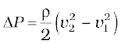
where v2 is the speed of air over the upper surface and v1 is the speed under the bottom surface.
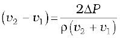
Taking the average speed
vav = (v2 + v1)/2 = 960 km/h = 267 m s-1,
we have
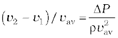≈ 0.08
The speed above the wing needs to be only 8 % higher than that below.
10.5 VISCOSITY
Most of the fluids are not ideal ones and offer some resistance to motion. This resistance to fluid motion is like an internal friction analogous to friction when a solid moves on a surface. It is called viscosity. This force exists when there is relative motion between layers of the liquid. Suppose we consider a fluid like oil enclosed between two glass plates as shown in Fig. 10.14 (a). The bottom plate is fixed while the top plate is moved with a constant velocity v relative to the fixed plate. If oil is replaced by honey, a greater force is required to move the plate with the same velocity. Hence we say that honey is more viscous than oil. The fluid in contact with a surface has the same velocity as that of the surfaces. Hence, the layer of the liquid in contact with top surface moves with a velocity v and the layer of the liquid in contact with the fixed surface is stationary. The velocities of layers increase uniformly from bottom (zero velocity) to the top layer (velocity v). For any layer of liquid, its upper layer pulls it forward while lower layer pulls it backward. This results in force between the layers. This type of flow is known as laminar. The layers of liquid slide over one another as the pages of a book do when it is placed flat on a table and a horizontal force is applied to the top cover. When a fluid is flowing in a pipe or a tube, then velocity of the liquid layer along the axis of the tube is maximum and decreases gradually as we move towards the walls where it becomes zero, Fig. 10.14 (b). The velocity on a cylindrical surface in a tube is constant.
On account of this motion, a portion of liquid, which at some instant has the shape ABCD, take the shape of AEFD after short interval of time (∆t). During this time interval the liquid has undergone a shear strain of
∆x/l. Since, the strain in a flowing fluid increases with time continuously. Unlike a solid, here the stress is found experimentally to depend on ‘rate of change of strain’ or ‘strain rate’ i.e. ∆x/(l ∆t) or v/l instead of strain itself. The coefficient of viscosity (pronounced ‘eta’) for a fluid is defined as the ratio of shearing stress to the strain rate.
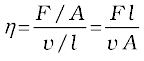 (10.18)
The SI unit of viscosity is poiseiulle (Pl). Its other units are N s m-2 or Pa s. The dimensions of viscosity are [ML-1T-1]. Generally thin liquids like water, alcohol etc. are less viscous than thick liquids like coal tar, blood, glycerin etc. The coefficients of viscosity for some common fluids are listed in Table 10.2. We point out two facts about blood and water that you may find interesting. As Table 10.2 indicates, blood is ‘thicker’ (more viscous) than water. Further the relative viscosity (η/ηwater) of blood remains constant between 0oC and 37oC.
The viscosity of liquids decreases with temperature while it increases in the case of gases.
(a)
(b)
Fig 10.14 (a) A layer of liquid sandwiched between two parallel glass plates in which the lower plate is fixed and the upper one is moving to the right with velocity v (b) velocity distribution for viscous flow in a pipe.
Example 10.9 A metal block of area 0.10 m2 is connected to a 0.010 kg mass via a string that passes over an ideal pulley (considered massless and frictionless), as in Fig. 10.15. A liquid with a film thickness of 0.30 mm is placed between the block and the table. When released the block moves to the right with a constant speed of 0.085 m s-1. Find the coefficient of viscosity of the liquid.
Fig. 10.15 Measurement of the coefficient of viscosity of a liquid.
Answer The metal block moves to the right because of the tension in the string. The tension T is equal in magnitude to the weight of the suspended mass m. Thus the shear force F is
F = T = mg = 0.010 kg × 9.8 m s–2 = 9.8 × 10-2 N
Shear stress on the fluid = F/A = 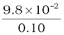
Strain rate = 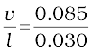
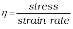
=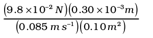
= 3.45 ×10-3 Pa s
Table10.2 The viscosities of some fluids
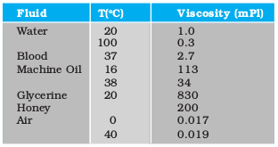
10.5.1 Stokes’ Law
When a body falls through a fluid it drags the layer of the fluid in contact with it. A relative motion between the different layers of the fluid is set and as a result the body experiences a retarding force. Falling of a raindrop and swinging of a pendulum bob are some common examples of such motion. It is seen that the viscous force is proportional to the velocity of the object and is opposite to the direction of motion. The other quantities on which the force F depends are viscosity η of the fluid and radius a of the sphere. Sir George G. Stokes (1819-1903), an English scientist enunciated clearly the viscous drag force F as
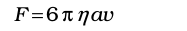 (10.19)
This is known as Stokes’ law.We shall not derive Stokes’ law.
This law is an interesting example of retarding force which is proportional to velocity. We can study its consequences on an object falling through a viscous medium. We consider a raindrop in air. It accelerates initially due to gravity. As the velocity increases, the retarding force also increases. Finally when viscous force plus buoyant force becomes equal to force due to gravity, the net force becomes zero and so does the acceleration. The sphere (raindrop) then descends with a constant velocity. Thus in equilibrium, this terminal velocity vt is given by
6πηavt = (4π/3) a3 (ρ-σ)g
where ρ and σ are mass densities of sphere and the fluid respectively. We obtain
vt = 2a2 (ρ-σ)g / (9η) (10.20)
So the terminal velocity vt depends on the square of the radius of the sphere and inversely on the viscosity of the medium.
You may like to refer back to Example 6.2 in this context.
Example 10.10 The terminal velocity of a copper ball of radius 2.0 mm falling through a tank of oil at 20oC is 6.5 cm s-1. Compute the viscosity of the oil at 20oC. Density of oil is 1.5 ×103 kg m-3, density of copper is 8.9 × 103 kg m-3.
Answer We have vt = 6.5 × 10-2 ms-1, a = 2 × 10-3 m, g = 9.8 ms-2, ρ = 8.9 × 103 kg m-3,
σ =1.5 ×103 kg m-3. From Eq. (10.20)
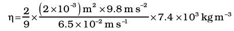
= 9.9 × 10-1 kg m–1 s–1
10.6 REYNOLDS NUMBER
When the rate of flow of a fluid is large, the flow no longer remain laminar, but becomes turbulent. In a turbulent flow the velocity of the fluids at any point in space varies rapidly and randomly with time. Some circular motions called eddies are also generated. An obstacle placed in the path of a fast moving fluid causes turbulence [Fig. 10.8 (b)]. The smoke rising from a burning stack of wood, oceanic currents are turbulent. Twinkling of stars is the result of atmospheric turbulence. The wakes in the water and in the air left by cars, aeroplanes and boats are also turbulent.
Osborne Reynolds (1842-1912) observed that turbulent flow is less likely for viscous fluid flowing at low rates. He defined a dimensionless number, whose value gives one an approximate idea whether the flow would be turbulent . This number is called the Reynolds Re.
Re = ρvd/η (10.21)
where ρ is the density of the fluid flowing with a speed v, d stands for the dimension of the pipe, and η is the viscosity of the fluid. Re is a dimensionless number and therefore, it remains same in any system of units. It is found that flow is streamline or laminar for Re less than 1000. The flow is turbulent for Re > 2000. The flow becomes unsteady for Re between 1000 and 2000. The critical value of Re (known as critical Reynolds number), at which turbulence sets, is found to be the same for the geometrically similar flows. For example when oil and water with their different densities and viscosities, flow in pipes of same shapes and sizes, turbulence sets in at almost the same value of Re. Using this fact a small scale laboratory model can be set up to study the character of fluid flow. They are useful in designing of ships, submarines, racing cars and aeroplanes.
Re can also be written as
Re = ρv2 / (ηv/d) = ρAv2 / (ηAv/d) (10.22)
= inertial force/force of viscosity.
Thus Re represents the ratio of inertial force (force due to inertia i.e. mass of moving fluid or due to inertia of obstacle in its path) to viscous force.
Turbulence dissipates kinetic energy usually in the form of heat. Racing cars and planes are engineered to precision in order to minimise turbulence. The design of such vehicles involves experimentation and trial and error. On the other hand turbulence (like friction) is sometimes desirable. Turbulence promotes mixing and increases the rates of transfer of mass, momentum and energy. The blades of a kitchen mixer induce turbulent flow and provide thick milk shakes as well as beat eggs into a uniform texture.
Example 10.11 The flow rate of water from a tap of diameter 1.25 cm is 0.48 L/min. The coefficient of viscosity of water is 10-3 Pa s. After sometime the flow rate is increased to 3 L/min. Characterise the flow for both the flow rates.
Answer Let the speed of the flow be v and the diameter of the tap be d = 1.25 cm. The volume of the water flowing out per second is
Q = v × π d2 / 4
v = 4 Q / d2π
Re = 4 ρ Q / π d η
= 4 ×103 kg m–3 × Q/(3.14 ×1.25 ×10-2 m ×10-3 Pa s)
= 1.019 × 108 m–3 s Q
Since initially
Q = 0.48 L / min = 8 cm3 / s = 8 × 10-6 m3 s-1,
we obtain,
Re = 815
Since this is below 1000, the flow is steady.
After some time when
Q = 3 L / min = 50 cm3 / s = 5 × 10-5 m3 s-1, we obtain,
Re = 5095
The flow will be turbulent. You may carry out an experiment in your washbasin to determine the transition from laminar to turbulent
flow.
10.7 SURFACE TENSION
You must have noticed that, oil and water do not mix; water wets you and me but not ducks; mercury does not wet glass but water sticks to it, oil rises up a cotton wick, inspite of gravity, Sap and water rise up to the top of the leaves of the tree, hairs of a paint brush do not cling together when dry and even when dipped in water but form a fine tip when taken out of it. All these and many more such experiences are related with the free surfaces of liquids. As liquids have no definite shape but have a definite volume, they acquire a free surface when poured in a container. These surfaces possess some additional energy. This phenomenon is known as surface tension and it is concerned with only liquid as gases do not have free surfaces. Let us now understand this phenomena.
10.7.1 Surface Energy
A liquid stays together because of attraction between molecules. Consider a molecule well inside a liquid. The intermolecular distances are such that it is attracted to all the surrounding molecules [Fig. 10.16(a)]. This attraction results in a negative potential energy for the molecule, which depends on the number and distribution of molecules around the chosen one. But the average potential energy of all the molecules is the same. This is supported by the fact that to take a collection of such molecules (the liquid) and to disperse them far away from each other in order to evaporate or vaporise, the heat of evaporation required is quite large. For water it is of the order of 40 kJ/mol.
Let us consider a molecule near the surface Fig. 10.16(b). Only lower half side of it is surrounded by liquid molecules. There is some negative potential energy due to these, but obviously it is less than that of a molecule in bulk, i.e., the one fully inside. Approximately it is half of the latter. Thus, molecules on a liquid surface have some extra energy in comparison to molecules in the interior. A liquid thus tends to have the least surface area which external conditions permit. Increasing surface area requires energy. Most surface phenomenon can be understood in terms of this fact. What is the energy required for having a molecule at the surface? As mentioned above, roughly it is half the energy required to remove it entirely from the liquid i.e., half the heat of evaporation.
Finally, what is a surface? Since a liquid consists of molecules moving about, there cannot be a perfectly sharp surface. The density of the liquid molecules drops rapidly to zero around z = 0 as we move along the direction indicated Fig 10.16 (c) in a distance of the order of a few molecular sizes.
Fig. 10.16 Schematic picture of molecules in a liquid, at the surface and balance of forces. (a) Molecule inside a liquid. Forces on a molecule due to others are shown. Direction of arrows indicates attraction of repulsion. (b) Same, for a molecule at a surface. (c) Balance of attractive (A) and repulsive (R) forces.
10.7.2 Surface Energy and Surface Tension
As we have discussed that an extra energy is associated with surface of liquids, the creation of more surface (spreading of surface) keeping other things like volume fixed requires additional energy. To appreciate this, consider a horizontal liquid film ending in bar free to slide over parallel guides Fig (10.17).
Fig. 10.17 Stretching a film. (a) A film in equilibrium; (b) The film stretched an extra distance.
Suppose that we move the bar by a small distance d as shown. Since the area of the surface increases, the system now has more energy, this means that some work has been done against an internal force. Let this internal force be F, the work done by the applied force is F.d = Fd. From conservation of energy, this is stored as additional energy in the film. If the surface energy of the film is S per unit area, the extra area is 2dl. A film has two sides and the liquid in between, so there are two surfaces and the extra energy is
S (2dl) = Fd (10.23)
Or, S=Fd/2dl = F/2l (10.24)
This quantity S is the magnitude of surface tension. It is equal to the surface energy per unit area of the liquid interface and is also equal to the force per unit length exerted by the fluid on the movable bar.
So far we have talked about the surface of one liquid. More generally, we need to consider fluid surface in contact with other fluids or solid surfaces. The surface energy in that case depends on the materials on both sides of the surface. For example, if the molecules of the materials attract each other, surface energy is reduced while if they repel each other the surface energy is increased. Thus, more appropriately, the surface energy is the energy of the interface between two materials and depends on both of them.
We make the following observations from above:
(i) Surface tension is a force per unit length (or surface energy per unit area) acting in the plane of the interface between the plane of the liquid and any other substance; it also is the extra energy that the molecules at the interface have as compared to molecules in the interior.
(ii) At any point on the interface besides the boundary, we can draw a line and imagine equal and opposite surface tension forces S per unit length of the line acting perpendicular to the line, in the plane of the interface. The line is in equilibrium. To be more specific, imagine a line of atoms or molecules at the surface. The atoms to the left pull the line towards them; those to the right pull it towards them! This line of atoms is in equilibrium under tension. If the line really marks the end of the interface, as in Figure 10.16 (a) and (b) there is only the force S per unit length acting inwards.
Table 10.3 gives the surface tension of various liquids. The value of surface tension depends on temperature. Like viscosity, the surface tension of a liquid usually falls with temperature.
Table 10.3 Surface tension of some liquids at the temperatures indicated with the heats of the vaporisation
A fluid will stick to a solid surface if the surface energy between fluid and the solid is smaller than the sum of surface energies between solid-air, and fluid-air. Now there is cohesion between the solid surface and the liquid. It can be directly measured experimentaly as schematically shown in Fig. 10.18. A flat vertical glass plate, below which a vessel of some liquid is kept, forms one arm of the balance. The plate is balanced by weights on the other side, with its horizontal edge just over water. The vessel is raised slightly till the liquid just touches the glass plate and pulls it down a little because of surface tension. Weights are added till the plate just clears water.
Fig. 10.18 Measuring Surface Tension.
Suppose the additional weight required is W. Then from Eq. 10.24 and the discussion given there, the surface tension of the liquid-air interface is
Sla = (W/2l) = (mg/2l) (10.25)
where m is the extra mass and l is the length of the plate edge. The subscript (la) emphasises the fact that the liquid-air interface tension is involved.
10.7.3 Angle of Contact
The surface of liquid near the plane of contact, with another medium is in general curved. The angle between tangent to the liquid surface at the point of contact and solid surface inside the liquid is termed as angle of contact. It is denoted by θ. It is different at interfaces of different pairs of liquids and solids. The value of θ determines whether a liquid will spread on the surface of a solid or it will form droplets on it. For example, water forms droplets on lotus leaf as shown in Fig. 10.19 (a) while spreads over a clean plastic plate as shown in Fig. 10.19(b).
(a)
(b)
Fig. 10.19 Different shapes of water drops with interfacial tensions (a) on a lotus leaf (b) on a clean plastic plate.
We consider the three interfacial tensions at all the three interfaces, liquid-air, solid-air and solid-liquid denoted by Sla, Ssa & Ssl respectively as given in Fig. 10.19 (a) and (b). At the line of contact, the surface forces between the three media must be in equilibrium. From the Fig. 10.19(b) the following relation is easily derived.
Sla cos θ + Ssl = Ssa (10.26)
The angle of contact is an obtuse angle if
Ssl > Sla as in the case of water-leaf interface while it is an acute angle if Ssl < Sla as in the case of water-plastic interface. When θ is an obtuse angle then molecules of liquids are attracted strongly to themselves and weakly to those of solid, it costs a lot of energy to create a liquid-solid surface, and liquid then does not wet the solid. This is what happens with water on a waxy or oily surface, and with mercury on any surface. On the other hand, if the molecules of the liquid are strongly attracted to those of the solid, this will reduce Ssl and therefore, cos θ may increase or θ may decrease. In this case θ is an acute angle. This is what happens for water on glass or on plastic and for kerosene oil on virtually anything (it just spreads). Soaps, detergents and dying substances are wetting agents. When they are added the angle of contact becomes small so that these may penetrate well and become effective. Water proofing agents on the other hand are added to create a large angle of contact between the water and fibres.
10.7.4 Drops and Bubbles
One consequence of surface tension is that free liquid drops and bubbles are spherical if effects of gravity can be neglected. You must have seen this especially clearly in small drops just formed in a high-speed spray or jet, and in soap bubbles blown by most of us in childhood. Why are drops and bubbles spherical? What keeps soap bubbles stable?
As we have been saying repeatedly, a liquid-air interface has energy, so for a given volume the surface with minimum energy is the one with the least area. The sphere has this property. Though it is out of the scope of this book, but you can check that a sphere is better than at least a cube in this respect! So, if gravity and other forces (e.g. air resistance) were ineffective, liquid drops would be spherical.
Another interesting consequence of surface tension is that the pressure inside a spherical drop Fig. 10.20(a) is more than the pressure outside. Suppose a spherical drop of radius r is in equilibrium. If its radius increase by ∆r. The extra surface energy is
[4π(r + ∆r) 2- 4πr2] Sla = 8πr ∆r Sla (10.27)
If the drop is in equilibrium this energy cost is balanced by the energy gain due to expansion under the pressure difference (Pi – Po) between the inside of the bubble and the outside. The work done is
W = (Pi – Po) 4πr2∆r (10.28)
so that
(Pi – Po) = (2 Sla/ r) (10.29)
In general, for a liquid-gas interface, the convex side has a higher pressure than the concave side. For example, an air bubble in a liquid, would have higher pressure inside it.
See Fig 10.20 (b).
Fig. 10.20 Drop, cavity and bubble of radius r.
A bubble Fig 10.20 (c) differs from a drop and a cavity; in this it has two interfaces. Applying the above argument we have for a bubble
(Pi – Po) = (4 Sla/ r) (10.30)
This is probably why you have to blow hard, but not too hard, to form a soap bubble. A little extra air pressure is needed inside!
10.7.5 Capillary Rise
One consequence of the pressure difference across a curved liquid-air interface is the well-known effect that water rises up in a narrow tube in spite of gravity. The word capilla means
Fig. 10.21 Capillary rise, (a) Schematic picture of a narrow tube immersed water. (b) Enlarged picture near interface.
hair in Latin; if the tube were hair thin, the rise would be very large. To see this, consider a vertical capillary tube of circular cross section (radius a) inserted into an open vessel of water (Fig. 10.21). The contact angle between water and glass is acute. Thus the surface of water in the capillary is concave. This means that there is a pressure difference between the two sides of the top surface. This is given by
(Pi – Po) =(2S/r) = 2S/(a sec θ )
= (2S/a) cos θ (10.31)
Thus the pressure of the water inside the tube, just at the meniscus (air-water interface) is less than the atmospheric pressure. Consider the two points A and B in Fig. 10.21(a). They must be at the same pressure, namely
P0 + h ρ g = Pi = PA (10.32)
where ρ is the density of water and h is called the capillary rise [Fig. 10.21(a)]. Using Eq. (10.31) and (10.32) we have
h ρ g = (Pi – P0) = (2S cos θ )/a (10.33)
The discussion here, and the Eqs. (10.28) and (10.29) make it clear that the capillary rise is due to surface tension. It is larger, for a smaller a. Typically it is of the order of a few cm for fine capillaries. For example, if a = 0.05 cm, using the value of surface tension for water (Table 10.3), we find that
h = 2S/(ρ g a)
= 2.98 × 10–2 m = 2.98 cm
Notice that if the liquid meniscus is convex, as for mercury, i.e., if cos θ is negative then from Eq. (10.32) for example, it is clear that the liquid will be lower in the capillary !
10.7.6 Detergents and Surface Tension
We clean dirty clothes containing grease and oil stains sticking to cotton or other fabrics by adding detergents or soap to water, soaking clothes in it and shaking. Let us understand this process better.
Washing with water does not remove grease stains. This is because water does not wet greasy dirt; i.e., there is very little area of contact between them. If water could wet grease, the flow of water could carry some grease away. Something of this sort is achieved through detergents. The molecules of detergents are hairpin shaped, with one end attracted to water and the other to molecules of grease, oil or wax, thus tending to form water-oil interfaces. The result is shown in Fig. 10.22 as a sequence of figures.
In our language, we would say that addition of detergents, whose molecules attract at one end and say, oil on the other, reduces drastically the surface tension S (water-oil). It may even become energetically favourable to form such interfaces, i.e., globs of dirt surrounded by detergents and then by water. This kind of process using surface active detergents or surfactants is important not only for cleaning, but also in recovering oil, mineral ores etc.

Fig. 10.22 Detergent action in terms of what detergent molecules do.
Example 10.12 The lower end of a capillary tube of diameter 2.00 mm is dipped 8.00 cm below the surface of water in a beaker. What is the pressure required in the tube in order to blow a hemispherical bubble at its end in water? The surface tension of water at temperature of the experiments is 7.30 ×10-2 Nm-1. 1 atmospheric pressure = 1.01 × 105 Pa, density of water = 1000 kg/m3, g = 9.80 m s-2. Also calculate the excess pressure.
Answer The excess pressure in a bubble of gas in a liquid is given by 2S/r, where S is the surface tension of the liquid-gas interface. You should note there is only one liquid surface in this case. (For a bubble of liquid in a gas, there are two liquid surfaces, so the formula for excess pressure in that case is 4S/r.) The radius of the bubble is r. Now the pressure outside the bubble Po equals atmospheric pressure plus the pressure due to 8.00 cm of water column. That is
Po = (1.01 × 105 Pa + 0.08 m × 1000 kg m–3 × 9.80 m s–2)
= 1.01784 × 105 Pa
Therefore, the pressure inside the bubble is
Pi = Po + 2S/r
= 1.01784 × 105 Pa + (2 × 7.3 × 10-2 Pa m/10-3 m)
= (1.01784 + 0.00146) × 105 Pa
= 1.02 × 105 Pa where the radius of the bubble is taken to be equal to the radius of the capillary tube, since the bubble is hemispherical ! (The answer has been rounded off to three significant figures.) The excess pressure in the bubble is 146 Pa.
SUMMARY
1. The basic property of a fluid is that it can flow. The fluid does not have any resistance to change of its shape. Thus, the shape of a fluid is governed by the shape of its container.
2. A liquid is incompressible and has a free surface of its own. A gas is compressible and it expands to occupy all the space available to it.
3. If F is the normal force exerted by a fluid on an area A then the average pressure Pav is defined as the ratio of the force to area
4. The unit of the pressure is the pascal (Pa). It is the same as N m-2. Other common units of pressure are
1 atm = 1.01×105 Pa
1 bar = 105 Pa
1 torr = 133 Pa = 0.133 kPa
1 mm of Hg = 1 torr = 133 Pa
5. Pascal’s law states that: Pressure in a fluid at rest is same at all points which are at the same height. A change in pressure applied to an enclosed fluid is transmitted undiminished to every point of the fluid and the walls of the containing vessel.
6. The pressure in a fluid varies with depth h according to the expression
P = Pa + ρgh
where ρ is the density of the fluid, assumed uniform.
7. The volume of an incompressible fluid passing any point every second in a pipe of non uniform crossection is the same in the steady flow.
v A = constant ( v is the velocity and A is the area of crossection)
The equation is due to mass conservation in incompressible fluid flow.
8. Bernoulli’s principle states that as we move along a streamline, the sum of the pressure (P), the kinetic energy per unit volume (ρv2/2) and the potential energy per unit volume (ρgy) remains a constant.
P + ρv2/2 + ρgy = constant
The equation is basically the conservation of energy applied to non viscuss fluid motion in steady state. There is no fluid which have zero viscosity, so the above statement is true only approximately. The viscosity is like friction and converts the kinetic energy to heat energy.
9. Though shear strain in a fluid does not require shear stress, when a shear stress is applied to a fluid, the motion is generated which causes a shear strain growing with time. The ratio of the shear stress to the time rate of shearing strain is known as coefficient of viscosity, η.
where symbols have their usual meaning and are defined in the text.
10. Stokes’ law states that the viscous drag force F on a sphere of radius a moving with velocity v through a fluid of viscosity is, F = – 6πηav.
11. The onset of turbulence in a fluid is determined by a dimensionless parameter is called the Reynolds number given by
Re = ρvd/η
Where d is a typical geometrical length associated with the fluid flow and the other symbols have their usual meaning.
12. Surface tension is a force per unit length (or surface energy per unit area) acting in the plane of interface between the liquid and the bounding surface. It is the extra energy that the molecules at the interface have as compared to the interior.
POINTS TO PONDER
1. Pressure is a scalar quantity. The definition of the pressure as “force per unit area” may give one false impression that pressure is a vector. The “force” in the numerator of the definition is the component of the force normal to the area upon which it is impressed. While describing fluids as a conceptual shift from particle and rigid body mechanics is required. We are concerned with properties that vary from point to point in the fluid.
2. One should not think of pressure of a fluid as being exerted only on a solid like the walls of a container or a piece of solid matter immersed in the fluid. Pressure exists at all points in a fluid. An element of a fluid (such as the one shown in Fig. 10.2) is in equilibrium because the pressures exerted on the various faces are equal.
3. The expression for pressure
P =Pa +ρ gh
holds true if fluid is incompressible. Practically speaking it holds for liquids, which are largely incompressible and hence is a constant with height.
4. The gauge pressure is the difference of the actual pressure and the atmospheric pressure.
P – Pa=Pg
Many pressure-measuring devices measure the gauge pressure. These include the tyre pressure gauge and the blood pressure gauge (sphygmomanometer).
5. A streamline is a map of fluid flow. In a steady flow two streamlines do not intersect as it means that the fluid particle will have two possible velocities at the point.
6. Bernoulli’s principal does not hold in presence of viscous drag on the fluid. The work done by this dissipative viscous force must be taken into account in this case, and P2 [Fig. 10.9] will be lower than the value given by Eq. (10.12).
7. As the temperature rises the atoms of the liquid become more mobile and the coefficient of viscosity, η, falls. In a gas the temperature rise increases the random motion of atoms and η increases.
8. The critical Reynolds number for the onset of turbulence is in the range 1000 to 10000, depending on the geometry of the flow. For most cases Re < 1000 signifies laminar flow; 1000 < Re < 2000 is unsteady flow and Re > 2000 implies turbulent flow.
9. Surface tension arises due to excess potential energy of the molecules on the surface in comparison to their potential energy in the interior. Such a surface energy is present at the interface separating two substances at least one of which is a fluid. It is not the property of a single fluid alone.
Exercises
10.1 Explain why
(a) The blood pressure in humans is greater at the feet than at the brain
(b) Atmospheric pressure at a height of about 6 km decreases to nearly half of its value at the sea level, though the height of the atmosphere is more than 100 km
(c) Hydrostatic pressure is a scalar quantity even though pressure is force divided by area.
10.2 Explain why
(a) The angle of contact of mercury with glass is obtuse, while that of water with glass is acute.
(b) Water on a clean glass surface tends to spread out while mercury on the same surface tends to form drops. (Put differently, water wets glass while mercury does not.)
(c) Surface tension of a liquid is independent of the area of the surface
(d) Water with detergent disolved in it should have small angles of contact.
(e) A drop of liquid under no external forces is always spherical in shape
10.3 Fill in the blanks using the word(s) from the list appended with each statement:
(a) Surface tension of liquids generally ... with temperatures (increases / decreases)
(b) Viscosity of gases ... with temperature, whereas viscosity of liquids ... with temperature (increases / decreases)
(c) For solids with elastic modulus of rigidity, the shearing force is proportional to ... , while for fluids it is proportional to ... (shear strain / rate of shear strain)
(d) For a fluid in a steady flow, the increase in flow speed at a constriction follows (conservation of mass / Bernoulli’s principle)
(e) For the model of a plane in a wind tunnel, turbulence occurs at a ... speed for turbulence for an actual plane (greater / smaller)
10.4 Explain why
(a) To keep a piece of paper horizontal, you should blow over, not under, it
(b) When we try to close a water tap with our fingers, fast jets of water gush through the openings between our fingers
(c) The size of the needle of a syringe controls flow rate better than the thumb pressure exerted by a doctor while administering an injection
(d) A fluid flowing out of a small hole in a vessel results in a backward thrust on the vessel
(e) A spinning cricket ball in air does not follow a parabolic trajectory
10.5 A 50 kg girl wearing high heel shoes balances on a single heel. The heel is circular with a diameter 1.0 cm. What is the pressure exerted by the heel on the horizontal floor ?
10.6 Toricelli’s barometer used mercury. Pascal duplicated it using French wine of density 984 kg m–3. Determine the height of the wine column for normal atmospheric pressure.
10.7 A vertical off-shore structure is built to withstand a maximum stress of 109 Pa. Is the structure suitable for putting up on top of an oil well in the ocean ? Take the depth of the ocean to be roughly 3 km, and ignore ocean currents.
10.8 A hydraulic automobile lift is designed to lift cars with a maximum mass of 3000 kg. The area of cross-section of the piston carrying the load is 425 cm2. What maximum pressure would the smaller piston have to bear ?
10.9 A U-tube contains water and methylated spirit separated by mercury. The mercury columns in the two arms are in level with 10.0 cm of water in one arm and 12.5 cm of spirit in the other. What is the specific gravity of spirit ?
10.10 In the previous problem, if 15.0 cm of water and spirit each are further poured into the respective arms of the tube, what is the difference in the levels of mercury in the two arms ? (Specific gravity of mercury = 13.6)
10.11 Can Bernoulli’s equation be used to describe the flow of water through a rapid in a river ? Explain.
10.12 Does it matter if one uses gauge instead of absolute pressures in applying Bernoulli’s equation ? Explain.
10.13 Glycerine flows steadily through a horizontal tube of length 1.5 m and radius 1.0 cm. If the amount of glycerine collected per second at one end is 4.0 × 10–3 kg s–1, what is the pressure difference between the two ends of the tube ? (Density of glycerine = 1.3 × 103 kg m–3 and viscosity of glycerine = 0.83 Pa s). [You may also like to check if the assumption of laminar flow in the tube is correct].
10.14 In a test experiment on a model aeroplane in a wind tunnel, the flow speeds on the upper and lower surfaces of the wing are 70 m s–1and 63 m s-1 respectively. What is the lift on the wing if its area is 2.5 m2 ? Take the density of air to be 1.3 kg m–3.
10.15 Figures 10.23(a) and (b) refer to the steady flow of a (non-viscous) liquid. Which of the two figures is incorrect ? Why ?
Fig. 10.23
10.16 The cylindrical tube of a spray pump has a cross-section of 8.0 cm2 one end of which has 40 fine holes each of diameter 1.0 mm. If the liquid flow inside the tube is 1.5 m min–1, what is the speed of ejection of the liquid through the holes ?
10.17 A U-shaped wire is dipped in a soap solution, and removed. The thin soap film formed between the wire and the light slider supports a weight of 1.5 × 10–2 N (which includes the small weight of the slider). The length of the slider is 30 cm. What is the surface tension of the film ?
10.18 Figure 10.24 (a) shows a thin liquid film supporting a small weight = 4.5 × 10–2 N. What is the weight supported by a film of the same liquid at the same temperature in Fig. (b) and (c) ? Explain your answer physically.

Fig. 10.24
10.19 What is the pressure inside the drop of mercury of radius 3.00 mm at room temperature ? Surface tension of mercury at that temperature (20 °C) is 4.65 × 10–1 N m–1. The atmospheric pressure is 1.01 × 105 Pa. Also give the excess pressure inside the drop.
10.20 What is the excess pressure inside a bubble of soap solution of radius 5.00 mm, given that the surface tension of soap solution at the temperature (20 °C) is 2.50 × 10–2 N m–1 ? If an air bubble of the same dimension were formed at depth of 40.0 cm inside a container containing the soap solution (of relative density 1.20), what would be the pressure inside the bubble ? (1 atmospheric pressure is 1.01 × 105 Pa).
Additional Exercises
10.21 A tank with a square base of area 1.0 m2 is divided by a vertical partition in the middle. The bottom of the partition has a small-hinged door of area 20 cm2. The tank is filled with water in one compartment, and an acid (of relative density 1.7) in the other, both to a height of 4.0 m. compute the force necessary to keep the door close.
10.22 A manometer reads the pressure of a gas in an enclosure as shown in Fig. 10.25 (a) When a pump removes some of the gas, the manometer reads as in Fig. 10.25 (b) The liquid used in the manometers is mercury and the atmospheric pressure is 76 cm of mercury.
(a) Give the absolute and gauge pressure of the gas in the enclosure for cases (a) and (b), in units of cm of mercury.
(b) How would the levels change in case (b) if 13.6 cm of water (immiscible with mercury) are poured into the right limb of the manometer ? (Ignore the small change in the volume of the gas).
Fig. 10.25
10.23 Two vessels have the same base area but different shapes. The first vessel takes twice the volume of water that the second vessel requires to fill upto a particular common height. Is the force exerted by the water on the base of the vessel the same in the two cases ? If so, why do the vessels filled with water to that same height give different readings on a weighing scale ?
10.24 During blood transfusion the needle is inserted in a vein where the gauge pressure is 2000 Pa. At what height must the blood container be placed so that blood may just enter the vein ? [Use the density of whole blood from Table 10.1].
10.25 In deriving Bernoulli’s equation, we equated the work done on the fluid in the tube to its change in the potential and kinetic energy. (a) What is the largest average velocity of blood flow in an artery of diameter 2 × 10–3 m if the flow must remain laminar ? (b) Do the dissipative forces become more important as the fluid velocity increases ? Discuss qualitatively.
10.26 (a) What is the largest average velocity of blood flow in an artery of radius 2×10–3m if the flow must remain lanimar? (b) What is the corresponding flow rate ? (Take viscosity of blood to be 2.084 × 10–3 Pa s).
10.27 A plane is in level flight at constant speed and each of its two wings has an area of 25 m2. If the speed of the air is 180 km/h over the lower wing and 234 km/h over the upper wing surface, determine the plane’s mass. (Take air density to be 1 kg m–3).
10.28 In Millikan’s oil drop experiment, what is the terminal speed of an uncharged drop of radius 2.0 × 10–5 m and density 1.2 × 103 kg m–3. Take the viscosity of air at the temperature of the experiment to be 1.8 × 10–5 Pa s. How much is the viscous force on the drop at that speed ? Neglect buoyancy of the drop due to air.
10.29 Mercury has an angle of contact equal to 140° with soda lime glass. A narrow tube of radius 1.00 mm made of this glass is dipped in a trough containing mercury. By what amount does the mercury dip down in the tube relative to the liquid surface outside ? Surface tension of mercury at the temperature of the experiment is 0.465 N m–1. Density of mercury = 13.6 × 103 kg m–3.
10.30 Two narrow bores of diameters 3.0 mm and 6.0 mm are joined together to form a U-tube open at both ends. If the U-tube contains water, what is the difference in its levels in the two limbs of the tube ? Surface tension of water at the temperature of the experiment is 7.3 × 10–2 N m–1. Take the angle of contact to be zero and density of water to be 1.0 × 103 kg m–3 (g = 9.8 m s–2) .
Calculator/Computer – Based Problem
10.31 (a) It is known that density ρ of air decreases with height y as where ρ0 = 1.25 kg m–3 is the density at sea level, and y0 is a constant. This density variation is called the law of atmospheres. Obtain this law assuming that the temperature of atmosphere remains a constant (isothermal conditions). Also assume that the value of g remains constant.
(b) A large He balloon of volume 1425 m3 is used to lift a payload of 400 kg. Assume that the balloon maintains constant radius as it rises. How high does it rise ?
[Take y0 = 8000 m and ρHe = 0.18 kg m–3].
Appendix 10.1 : What is blood pressure ?
In evolutionary history there occurred a time when animals started spending a significant amount of time in the upright position. This placed a number of demands on the circulatory system. The venous system that returns blood from the lower extremities to the heart underwent changes. You will recall that veins are blood vessels through which blood returns to the heart. Humans and animals such as the giraffe have adapted to the problem of moving blood upward against gravity. But animals such as snakes, rats and rabbits will die if held upwards, since the blood remains in the lower extremities and the venous system is unable to move it towards the heart.
Fig. 10.26 Schematic view of the gauge pressures in the arteries in various parts of the human body while standing or lying down. The pressures shown are averaged over a heart cycle.
Figure 10.26 shows the average pressures observed in the arteries at various points in the human body. Since viscous effects are small, we can use Bernoulli’s equation, Eq. (10.13),
to understand these pressure values. The kinetic energy term (ρ v2/2) can be ignored since the velocities in the three arteries are small (≈ 0.1 m s–1) and almost constant. Hence the gauge pressures at the brain PB, the heart PH, and the foot PF are related by
PF = PH + ρ g hH = PB + ρ g hB (10.34)
where ρ is the density of blood.
Typical values of the heights to the heart and the brain are hH = 1.3 m and hB = 1.7 m. Taking ρ = 1.06 × 103 kg m–3 we obtain that PF = 26.8 kPa (kilopascals) and PB = 9.3 kPa given that PH = 13.3 kPa. Thus the pressures in the lower and upper parts of the body are so different when a person is standing, but are almost equal when he is lying down. As mentioned in the text the units for pressure more commonly employed in medicine and physiology are torr and mm of Hg. 1 mm of Hg = 1 torr = 0.133 kPa. Thus the average pressure at the heart is PH = 13.3 kPa = 100 mm of Hg.
The human body is a marvel of nature. The veins in the lower extremities are equipped with valves, which open when blood flows towards the heart and close if it tends to drain down. Also, blood is returned at least partially by the pumping action associated with breathing and by the flexing of the skeletal muscles during walking. This explains why a soldier who is required to stand at attention may faint because of insufficient return of the blood to the heart. Once he is made to lie down, the pressures become equalized and he regains consciousness.
An instrument called the sphygmomanometer usually measures the blood pressure of humans. It is a fast, painless and non-invasive technique and gives the doctor a reliable idea about the patient’s health. The measurement process is shown in Fig. 10.27. There are two reasons why the upper arm is used. First, it is at the same level as the heart and measurements here give values close to that at the heart. Secondly, the upper arm contains a single bone and makes the artery there (called the brachial artery) easy to compress. We have all measured pulse rates by placing our fingers over the wrist. Each pulse takes a little less than a second. During each pulse the pressure in the heart and the circulatory system goes through a maximum as the blood is pumped by the heart (systolic pressure) and a minimum as the heart relaxes (diastolic pressure). The sphygmomanometer is a device, which measures these extreme pressures. It works on the principle that blood flow in the brachial (upper arm) artery can be made to go from laminar to turbulent by suitable compression. Turbulent flow is dissipative, and its sound can be picked up on the stethoscope.
The gauge pressure in an air sack wrapped around the upper arm is measured using a manometer or a dial pressure gauge (Fig. 10.27). The pressure in the sack is first increased till the brachial artery is closed. The pressure in the sack is then slowly reduced while a stethoscope placed just below the sack is used to listen to noises arising in the brachial artery. When the pressure is just below the systolic (peak) pressure, the artery opens briefly. During this brief period, the blood velocity in the highly constricted artery is high and turbulent and hence noisy. The resulting noise is heard as a tapping sound on the stethoscope. When the pressure in the sack is lowered further, the artery remains open for a longer portion of the heart cycle. Nevertheless, it remains closed during the diastolic (minimum pressure) phase of the heartbeat. Thus the duration of the tapping sound is longer. When the pressure in the sack reaches the diastolic pressure the artery is open during the entire heart cycle. The flow is however, still turbulent and noisy. But instead of a tapping sound we hear a steady, continuous roar on the stethoscope.
Fig. 10.27 Blood pressure measurement using the sphygmomanometer and stethoscope.
The blood pressure of a patient is presented as the ratio of systolic/diastolic pressures. For a resting healthy adult it is typically 120/80 mm of Hg (120/80 torr). Pressures above 140/90 require medical attention and advice. High blood pressures may seriously damage the heart, kidney and other organs and must be controlled.